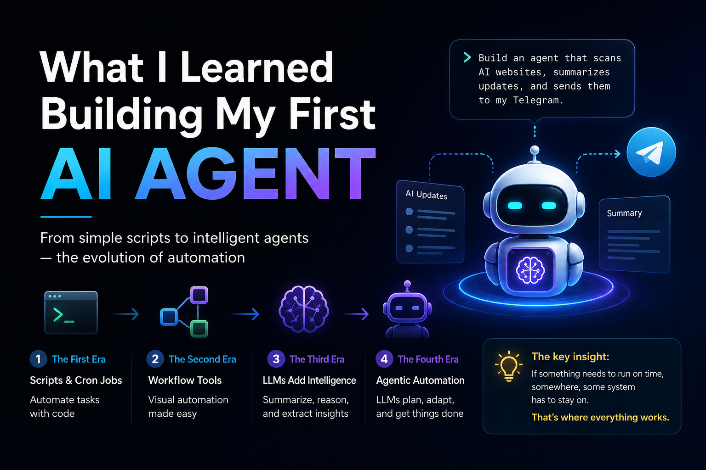

What I Learned Building My First AI Agent
Recently, I wanted to build an agentic AI workflow for myself — a dedicated agent that could scan AI-related websites like Anthropic, Claude, and OpenAI, detect new updates, summarize them, and send those updates directly to me on Telegram.
So I opened Claude in my terminal, explained what I wanted in plain English, and asked it to build the entire agent for me. It worked beautifully. It fetched the latest updates, summarized them, and sent them to Telegram. I even scheduled it for every morning at 9 AM. At that point, I felt like I had finally built an actual AI agent.
But the next morning, nothing came. At first, I thought maybe there had been no major updates in the last 24 hours. But then a few days passed. Then a week. Still nothing. When I checked the websites manually, I realized they had definitely changed, but my Telegram bot had stayed silent.
The Realization
That was the moment I understood what I had been missing. The agent was built on my own machine, and my machine was not running at the scheduled time, which meant the workflow itself never ran. It was such a simple thing, but it completely changed how I understood the whole idea of agents and automations. If you want an automation to work for you 24/7, then you need a system that runs 24/7. In other words, you need hosting.
That led me into a much deeper question: what exactly had changed in the world of automation, and why did this whole "agent" concept feel so new when, in reality, parts of it were already familiar?
The more I explored, the more I realized that automation is not new at all. It has simply evolved in layers.
The Four Eras of Automation
Why This Generation Feels Different
The most interesting part is not just that it can do the task. It is that it can reason when something breaks. If I am building a daily AI news summarizer and one website blocks the automation, then in the older workflow model, I would need to manually add extra handling for that case. But in this new era, the LLM can often figure out another path on its own. That ability to reason through failure is what makes this generation of automation feel fundamentally different.
This is also where a lot of the current hype comes from. Influencers talk about agents as if they are magical systems that can do everything on their own. And to be fair, what they can do is genuinely impressive. But there is one important detail that often gets skipped: if you want an agent to run on schedule, it still needs a system that is running on schedule.
What the Industry Is Building Toward
And now the industry is trying to solve even that. Companies like Anthropic, OpenAI, and Google are launching managed agent systems where you no longer have to worry as much about hosting, orchestration, error handling, or memory. Their platforms increasingly handle those layers for you. You describe the task, and they handle much more of the infrastructure behind it.
One of the most fascinating additions in this new phase is persistent memory. Earlier generations of automation would run and then forget everything. But persistent memory allows the system to remember what happened in previous runs. If it found a workaround yesterday, it can remember that today. That is a major step forward because it moves automation closer to continuity rather than repetition.
The Biggest Thing I Learned
So the biggest thing I learned from this whole process is that automation was never new. Agents did not appear out of nowhere. What changed is that each layer removed one more burden from the user. First, we had to write the scripts ourselves. Then workflow tools reduced the coding. Then LLMs added reasoning. And now managed agent platforms are reducing the burden of hosting, orchestration, and memory as well.
That lesson seems obvious in hindsight, but for me it was the exact missing piece that finally made the whole architecture of agents, workflows, and managed systems click into place.